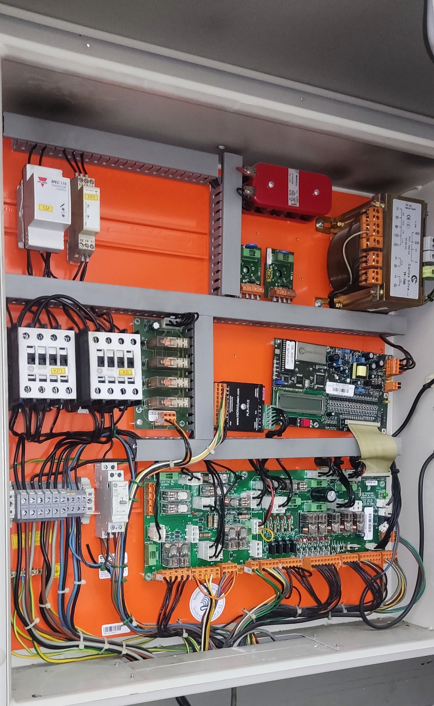

| LED | Ponto de Leitura / Condição de Ativação |
|---|---|
| SSG | Série de Segurança Geral (Após borne B7.2). Valida RFF, Paraquedas, Revisão, Limite Superior e Stop Cabine. |
| PP | Portas de Piso (Presença) (Após borne B8.3). Acende com todas as portas exteriores encostadas. |
| EPE | Encravamento Portas Exteriores (Após borne B7.5). Confirma o trancamento mecânico (trincos) de piso. |
| EPC | Encravamento Portas Cabine (Após borne B8.6). Fim da série; autorização para arranque da manobra. |
• Alimentação Inicial: Caso o relé RFF atue ou falte uma fase na rede local, a série geral de 48V AC fica cortada na origem (11-14).
• Ordem Lógica das Fichas: O circuito cruza alternadamente entre os barramentos das fichas B7 e B8 conforme o esquema de cabine/caixa.
• ATENÇÃO: Remova qualquer shunt ou ponte provisória de testes antes de dar a intervenção de avaria por terminada.
| Componente Técnico / Circuito | Pontas do Multímetro |
|---|---|
|
Alimentação Relé Falta de Fase (RFF) |
11 ➔ 14
|
|
Gerais Cabine Páraquedas, Alongamento e Stop Revisão |
B8.1 ➔ B8.2
|
|
Gerais Caixa Stop Fossa, Limitador e Fim de Curso |
B7.1 ➔ B7.2
|
|
Portas Caixa Contactos de Presença de Piso (Série PP) |
B8.2 ➔ B8.3
|
|
Trincos Caixa Trancamento Mecânico de Piso (Série EPE) |
B7.4 ➔ B7.5
|
|
Portas Cabine Contacto de Linha de Cabine (Série EPC) |
B8.5 ➔ B8.6
|